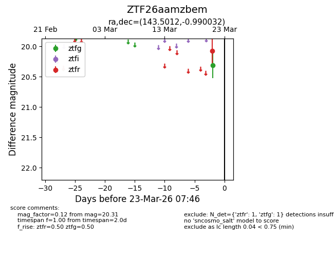
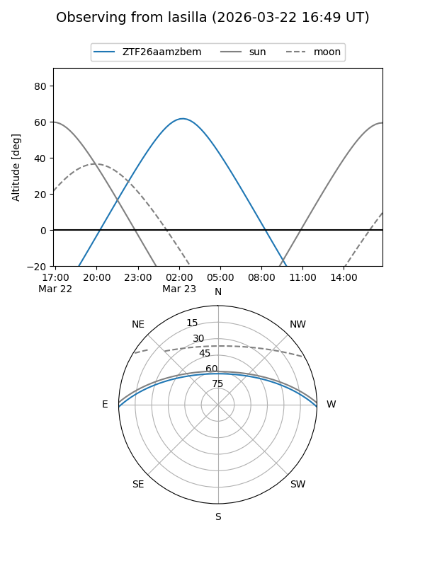
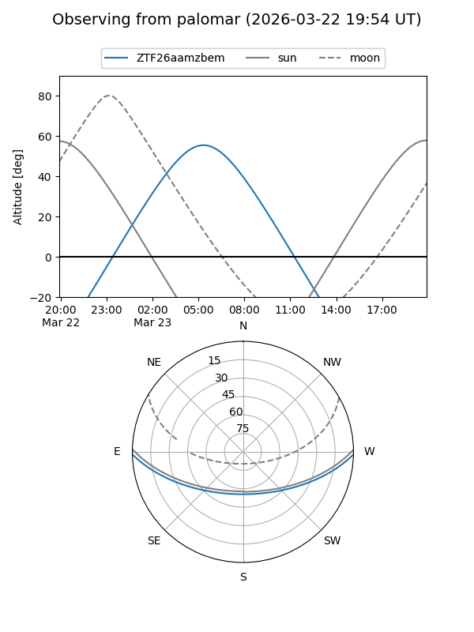

ZTF26aamzbem
Target ZTF26aamzbem at 2026-03-23 07:48
Aliases and brokers:
FINK: link
Lasair: link
ALeRCE: link
alt names
ZTF26aamzbem (ztf,fink_ztf)
Coordinates:
equatorial (ra, dec) = 143.5012,-0.99003
equatorial (HMS+DMS) = 09:34:00.29,-00:59:24.11
galactic (l, b) = (235.3074,+34.86942)
Flags:
Photometry:
last ztfg=20.31, ztfr=20.07
1 ztfg, 1 ztfr detections
Lightcurve

Visibility


Additional plots